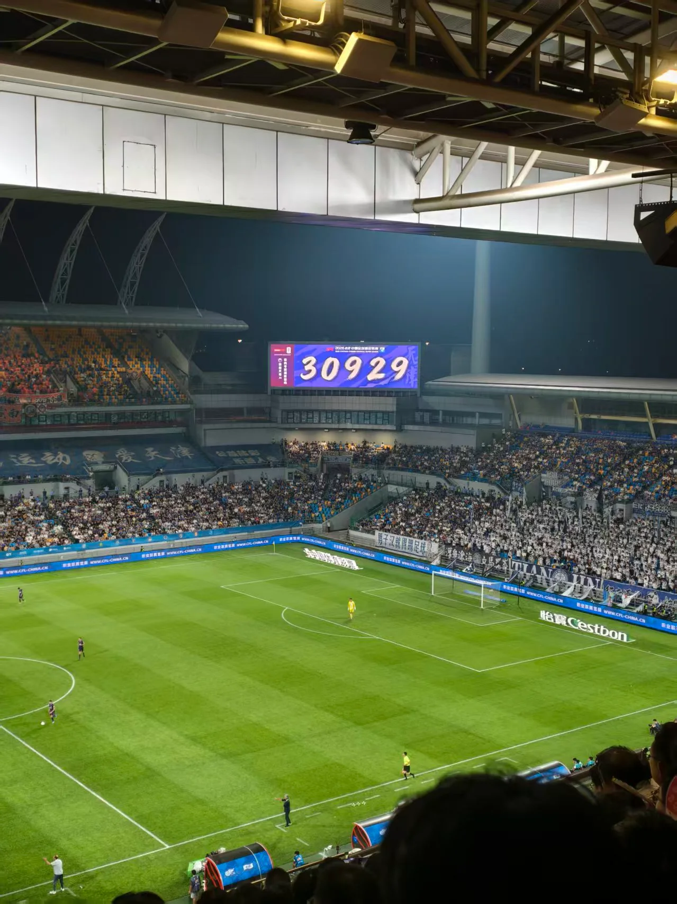

天津对云南：足球现场记录
2026年8月

把天津足球的现场留在照片里
这场看的是天津对云南。灯光下的草坪格外鲜亮，球门后方的看台铺满了球迷，横幅和队旗把赛场的氛围拉得很近。
从看台望过去，能同时看见场上的球员、场边的教练席，以及远处一片片连在一起的座位。照片定格的是比赛中的一个瞬间，视线还是会自然地追着场上的球走。
这一条只留给天津足球和现场的绿茵场，记录一次走进球场看比赛的日常。

这场看的是天津对云南。灯光下的草坪格外鲜亮，球门后方的看台铺满了球迷，横幅和队旗把赛场的氛围拉得很近。
从看台望过去，能同时看见场上的球员、场边的教练席，以及远处一片片连在一起的座位。照片定格的是比赛中的一个瞬间，视线还是会自然地追着场上的球走。
这一条只留给天津足球和现场的绿茵场，记录一次走进球场看比赛的日常。